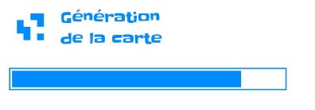
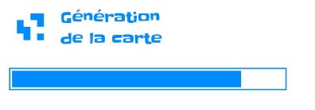

Projet M2D - PIXEL - Minimalist City Builder
Auteurs :Présentation du projet PIXEL - Minimalist city builder
Introduction
Ce projet s’inscrit dans le cadre du premier temps de la filière Digital.e, Méthodes de Développement (ou M2D). Le but principal du projet est de créer un site permettant de jouer à un jeu solo pnp ou à un jeu à plusieurs sur un seul écran.
Nous avons fait le choix de développer un City-Builder en nous inspirant du jeu Islanders pour les mécaniques de jeu et les interactions entre les différents bâtiments proposés dans le jeu.
Stack technique
Front-end
Back-end
Base de données
Hébergement
Conception
Avant de lancer les développements pour ce projet, nous sommes passés par une phase de conception qui nous a permis de définir les règles du jeu, des maquettes pour chaque écran ainsi que les différents composants que nous allions utiliser.
Cette phase de maquettage nous a également permis de définir une charte graphique.
Définition des règles
Pour les règles, nous nous sommes grandement inspiré de celles d’Islanders en les simplifiant. Nous voulions 5 environnements qui intéragissent tous différemment avec 12 bâtiments.
Les environnements que nous voulions implémenter étaient les suivants :
- Plaine
- Forêt
- Montagne
- Plage
- Mer
Les bâtiments qui seraient disponibles étaient les suivants :
- Centre-Ville
- Manoir
- Résidence
- Marché
- Théâtre
- Parc
- Atelier de bûcherons
- Mines
- Port
- Taverne
- Ferme
- Champs
Il a ensuite fallu déterminer les différentes interactions entre l’environnement et les bâtiments ainsi que l’inluence qu’un bâtiment pouvait avoir sur un autre.


Chaque bâtiment devait avoir une taille et une influence unique, nous l’avons également défini lors de cette phase de conception.

Wireframes
Les règles du jeu définies clairement, nous pouvions passer à la phase de maquettage. Si les règles viendraient à changer lors des bêta tests du jeu, il ne serait question que d’équilibrage et non de refonte des règles.


Charte graphique

Mock-ups
 



Comment y jouer ?
Version navigateur
Le jeu est disponible en suivant cette URL : https://minimalist-city-builder.vercel.app/
Nous recommandons d’utiliser Google Chrome, l’utilisation d’autres navigateurs peuvent amener à des problèmes d’affichage.
Version executable (uniquement sous Windows)
Il suffit de télecharger le zip ci-dessous et d’extraire son contenu à l’emplacement de votre choix. Executez ensuite le fichier Pixel.exe pour lancer le jeu
Le lien de télechargement du setup : Setup PIXEL
Vous avez besoin d’une connexion internet pour jouer même avec l’éxecutable. Le fichier ne compile que le front-end et communique avec le back-end via des API.
Code source
Repositories
Le code source du projet est disponible dans les repository GitHub suivants :
- Front-end : https://github.com/ppernalon/minimalist-city-builder.git
- Back-end : https://github.com/rcamisard/Minimalist-city-builder-server.git
Installation
Il n’est nécéssaire de lancer que le front-end pour lancer le jeu sur un localhost.
Front-end
npm install
Cette commande installera toutes les dépendances nécessaires pour que le programme fonctionne.
npm run serve
Cette commande lancera un serveur local sur lequel sera deployée l’application. Il ne vous reste qu’à ouvrir votre navigateur et entrer l’URL du serveur créé.
Back-end
Lancez la commande suivante dans votre terminal
python -m flask run
Vous aurez ainsi votre back-end deployé sur un serveur local.
Communication entre les serveurs
Dans le fichier src\http\AbstractHttpServices.js de votre application front-end, modifiez la valeur de la variable API_URL et remplacez-là par l’URL de votre serveur back-end. Sauvegardez vos changements et les deux serveurs sont maintenant reliés entre eux.